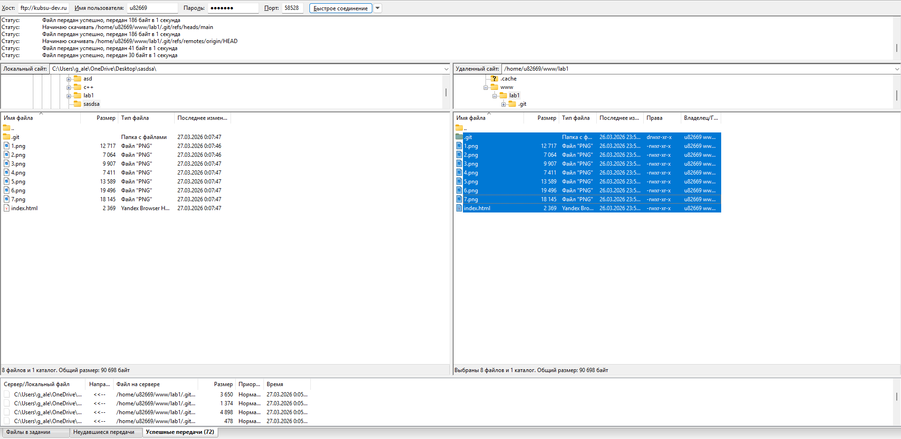

Студент: Алейник Григорий
Логин: u82669
1. Подключение к учебному серверу по SSH
Для подключения к учебному серверу университета, использующему протокол SSH, я использовал приложение PuTTY.

Скриншот 1: Настройки подключения в PuTTY и приветственный экран после входа.
Чтобы подключиться к нужному серверу, я ввел данные:
- Host Name: kubsu-dev.ru
- Port: 58528 (порт был выдан преподавателем, так как со стандартным портом не подключалось)
- Connection type: SSH
2. Определение IP-адреса (команда ping)
Команда: ping kubsu.ru
Что делает команда: Утилита ping отправляет ICMP-запросы на указанный узел и измеряет время ответа.
Результат: Я получил IP адрес сервера kubsu.ru (185.13.84.92).

Скриншот 2: Результат выполнения команды ping для kubsu.ru.
3. DNS-записи (команда nslookup)
A-запись домена kubsu.ru
Команда: nslookup -type=A kubsu.ru
Что делает команда: Запрашивает у DNS-сервера адресную запись (A-запись) для домена, которая связывает имя с IPv4-адресом.
Результат: Я получил IP адрес сервера kubsu.ru 185.13.84.92.

Скриншот 3: A-записи домена kubsu.ru.
MX-запись домена kubsu.ru
Команда: nslookup -type=MX kubsu.ru
Что делает команда: Запрашивает MX-записи домена, указывающие, какие почтовые серверы обслуживают домен и с каким приоритетом.
Результат: Я получил почтовые сервера, обслуживающие kubsu.ru.

Скриншот 4: MX-записи домена kubsu.ru.
A-запись домена kubsu-dev.ru
Команда: nslookup -type=A kubsu-dev.ru
Что делает команда: Запрашивает у DNS-сервера адресную запись (A-запись) для домена kubsu-dev.ru.
Результат: Я получил IP адрес сервера kubsu-dev.ru.

Скриншот 5: A-записи домена kubsu-dev.ru.
MX-запись домена kubsu-dev.ru
Команда: nslookup -type=MX kubsu-dev.ru
Что делает команда: Запрашивает MX-записи домена, указывающие, какие почтовые серверы обслуживают домен.
Результат: Для домена kubsu-dev.ru не найдено MX-записей (либо результат не отображен на скриншоте).

Скриншот 6: MX-записи домена kubsu-dev.ru.
4. Информация о регистрации доменов (команда whois)
Домен kubsu.ru
Команда: whois kubsu.ru
Что делает команда: Утилита whois запрашивает регистрационные данные домена из базы данных регистратора.
Результат: В результате вывелась информация о регистрации домена kubsu.ru.

Скриншот 7: Результат выполнения whois для kubsu.ru.
Домен kubsu-dev.ru
Команда: whois kubsu-dev.ru
Что делает команда: Утилита whois запрашивает регистрационные данные домена из базы данных регистратора для kubsu-dev.ru.
Результат: В результате вывелась информация о регистрации домена kubsu-dev.ru.

Скриншот 8: Результат выполнения whois для kubsu-dev.ru.
5. Создание веб-страницы и размещение на сервере
Я создал файл index.html и файлы скриншотов, после чего загрузил их в репозиторий на GitHub и склонировал на сервер в каталог www.
Веб-страница открывается по адресу: http://u82669.kubsu-dev.ru/lab1/
6. Копирование файлов через SFTP (FileZilla)
Я использовал программу FileZilla Client для подключения к серверу по SFTP. Данные для подключения:
- Хост: sftp://kubsu-dev.ru
- Логин: u82669
- Порт: 58528
После подключения я скопировал файлы из папки ~/www/lab1/ на локальный компьютер.

Скриншот 9: Окно FileZilla после скачивания файлов с сервера.